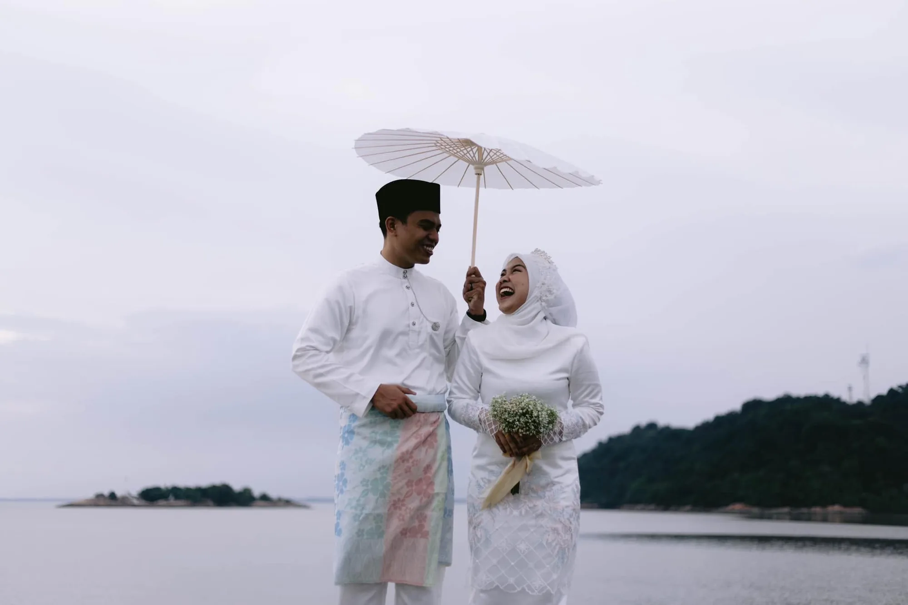
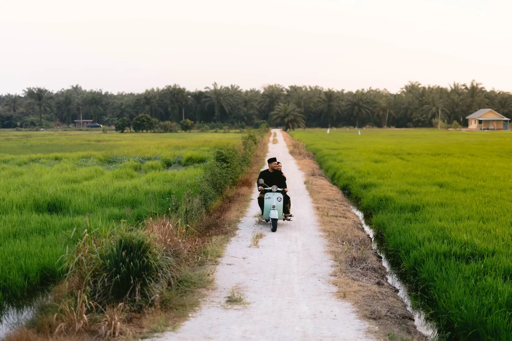
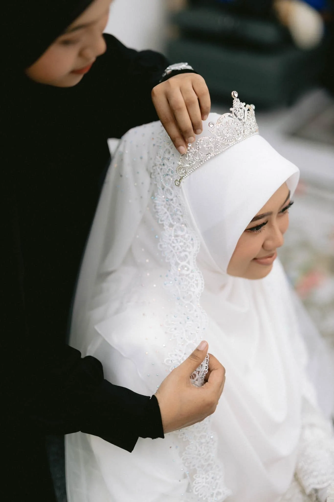
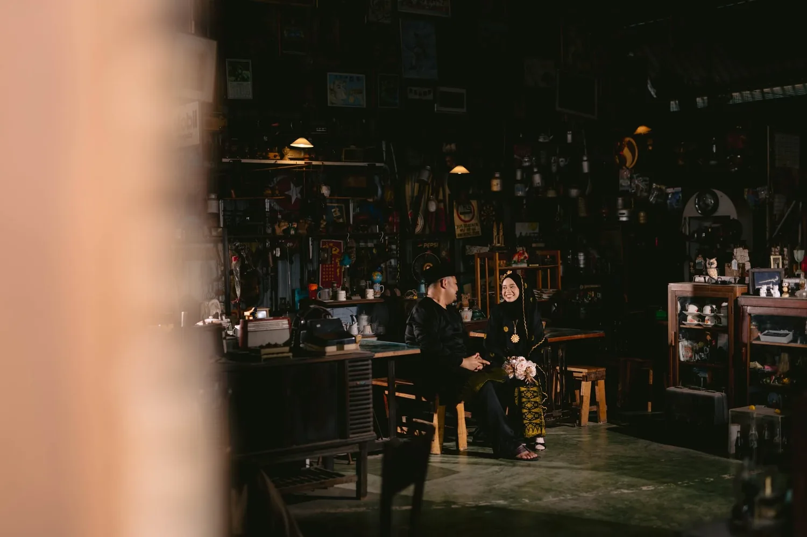
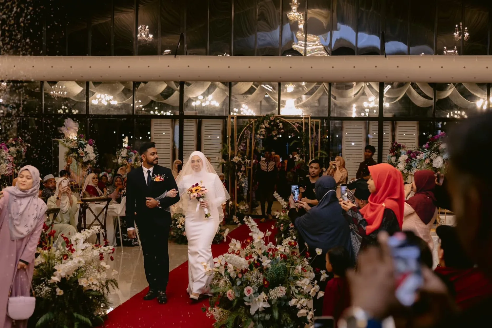
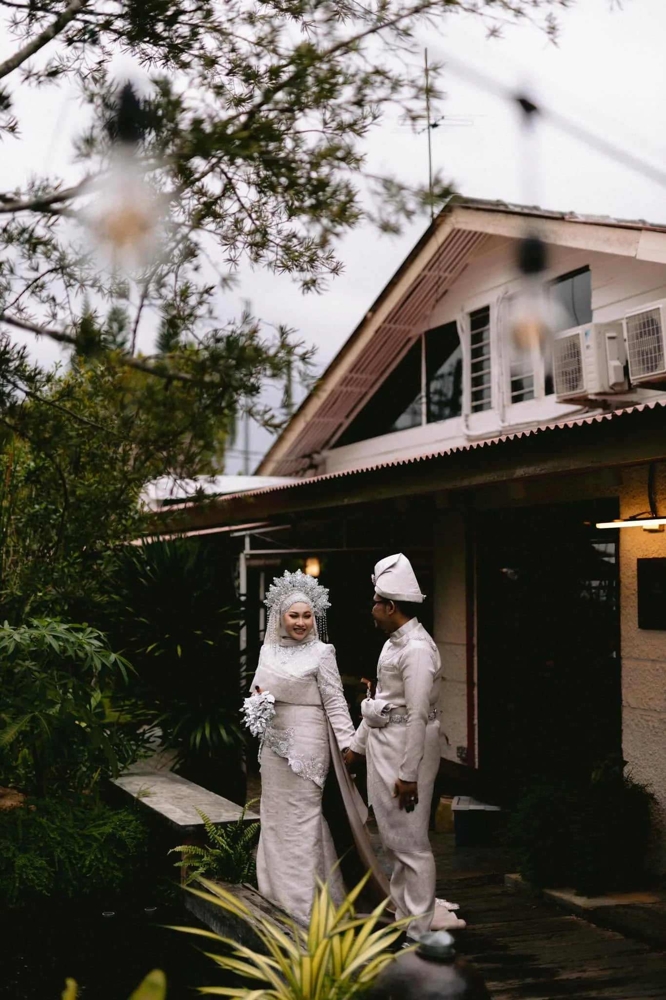
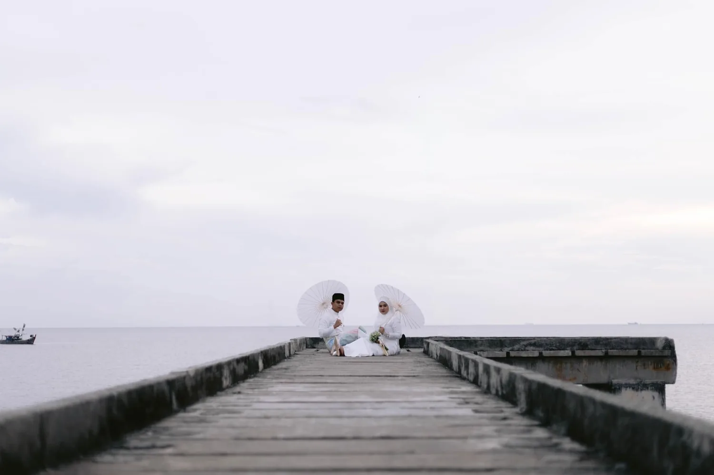
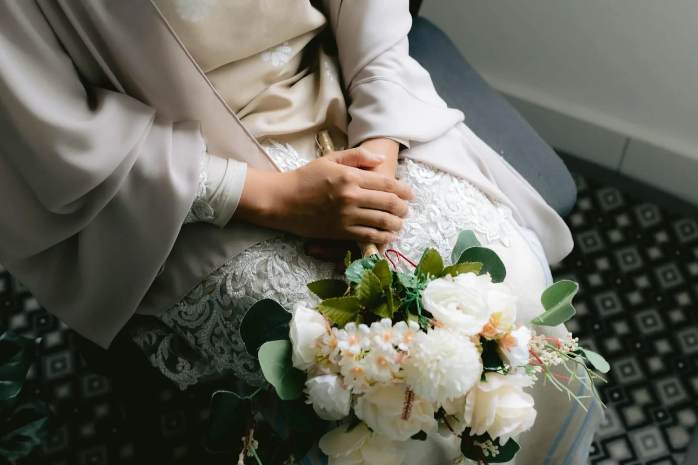
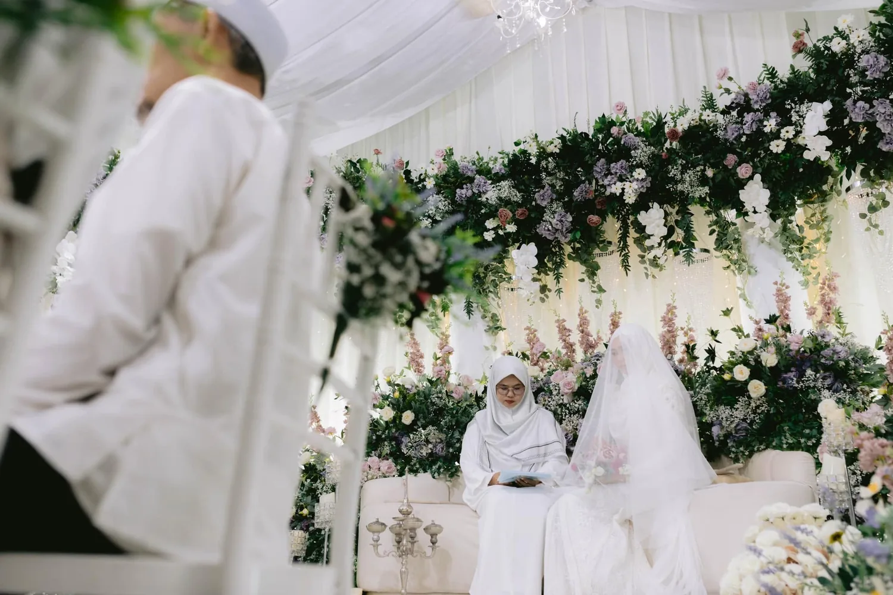
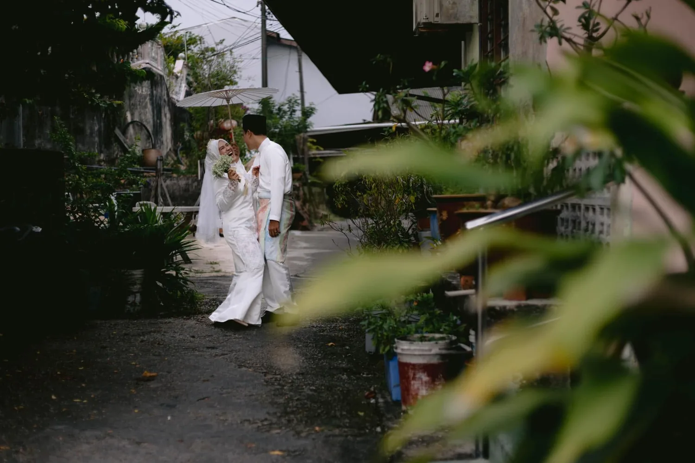

Present
Dekat dengan cerita anda tanpa mengambil alih suasana.

Faithnlove Stories
Real moments
Minimal direction
Stories that feel like you
THE FAITHNLOVE APPROACH
Kami menggunakan pendekatan dokumentari—berada dekat dengan cerita anda, memerhati dengan tenang dan merakam apa yang benar-benar berlaku.
Tiada lakonan berlebihan. Tiada hari yang diubah menjadi sesi fotografi. Hanya anda, orang yang anda sayangi, dan momen sebenar yang menjadikan semuanya bermakna.
Dekat dengan cerita anda tanpa mengambil alih suasana.
Momen sebenar dirakam sebagaimana ia berlaku.
Kesederhanaan yang masih terasa indah selepas bertahun-tahun.
SELECTED WORK






QUIETLY OBSERVEDDOCUMENTARY, WITH INTENTION
Pendekatan dokumentari tidak bermaksud anda dibiarkan tanpa panduan. Kami membantu ketika potret memerlukan arah, kemudian memberi ruang supaya hubungan, emosi dan suasana berkembang dengan semula jadi.
WEDDING COLLECTIONS
Setiap majlis mempunyai rentak yang berbeza. Pilih jenis liputan yang paling dekat dengan cerita anda, kemudian kami bincangkan butiran secara peribadi.

Untuk akad atau nikah—momen yang paling dekat, peribadi dan bermakna.

Untuk sanding atau resepsi—suasana, keluarga dan kegembiraan seluruh majlis.

Liputan yang menyatukan persiapan, upacara dan perayaan sebagai satu cerita lengkap.
THE EXPERIENCE
Daripada perbualan pertama hingga cerita lengkap anda siap disusun, pengalaman ini kekal peribadi, tenang dan sederhana.
Kami memahami perjalanan majlis, orang penting dan perkara yang anda mahu kenang.
Kami merakam dengan tenang dan memberi panduan hanya apabila ia benar-benar diperlukan.
Setiap gambar dipilih untuk menyusun kembali cerita dan rasa hari tersebut.
BEGIN YOUR STORY